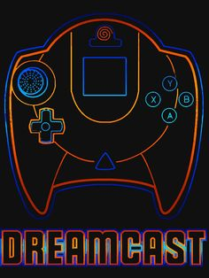
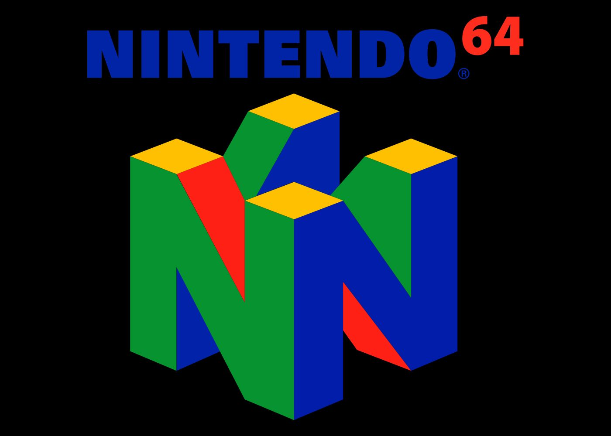

Lets get to know one another.....
So, why coding and software developement?
I have a degree in Psychology and picked up an interest in AI and machine learning whilst studying cyberpsychology, which revolves around the interactions and psychological impact of technology and social media on the user.
The use of artificial intelligence and chatbots were discussed as possible future forms of support for service users and the idea of creating programs that can 'think' learn and react fascinates me.
I aim to complete a masters centered around aritficial intelligence and would love to go on to study and create my own AI programs, but to do so I need practical coding experience first.
This end goal inspired me to join a Code Nation course and start my journey to becoming a developer.

Hobbies and Interests:

Retro Gaming:
I love playing games from the early days of the NES all the way up to 360, PS3, and Wii era of gaming. Early 2000s PC games, N64 and Dreamcast being stand out favourites. I also love the classic arcade titles from the 80s and 90's and adore couch co-op and local competitive gameplay
Reading:
I greatly enjoy reading with Robert Jordan's Wheel of Time series of books being my favoirets followed closely by Lord of the Rings and the Percy Jackson series. I also enjoy reading literature regarding Psychology and have a small library of books regarding the subject from my university days. I also enjoy reading comics and Manga.
Coding and Mathmatics:
I have been enjoying learning to code and have been brushing up on my maths skills (not my best subject) in order to gain a comprehensive understanding of artificial intelligence.